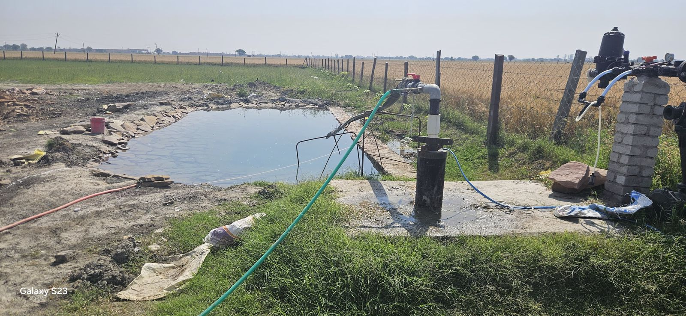
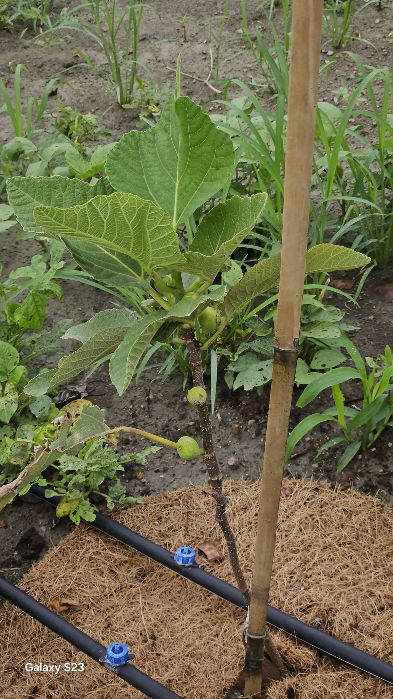
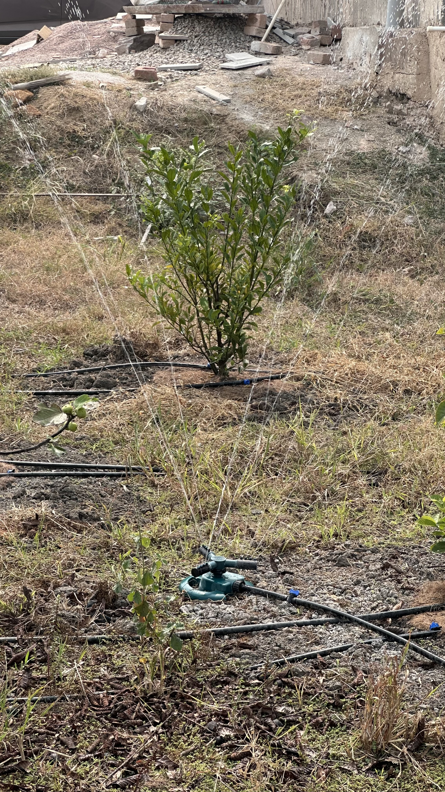

The Challenge
Kota sits in a semi-arid zone where summers push past 45°C and rainfall is concentrated in a few monsoon months. Traditional flood irrigation wastes up to 60% of water to evaporation and runoff. For a permaculture farm, that's not an option.
Our approach combines three systems — a farm pond for storage, drip lines for precision delivery, and sprinklers for young trees — so water reaches roots, not thin air.
Farm Pond & Tubewell
The farm pond is the heart of our water system. Fed by a tubewell, it stores water close to where it's needed and doubles as a microhabitat for beneficial insects and birds. A submersible pump connected via underground pipes distributes water to every corner of the farm.

Groundwater Recharge by Design
Most farm ponds are lined with concrete or plastic to prevent seepage. We made the opposite choice. Our pond bed is intentionally left unlined — just natural soil and stones. The reason: any rainwater that collects during the monsoon percolates through the stone bed and recharges the underground aquifer within 24 hours.
The numbers are significant — our pond conserves approximately 40,000 litres of water every 24 hours. During the rainy season, this means the pond can recharge groundwater to its full capacity each day, returning that entire volume back into the aquifer rather than letting it run off as surface water.
This isn't just good for the farm — it's a deliberate contribution to flood management. With climate change bringing increasingly erratic and intense rainfall even to Rajasthan's semi-arid landscape, every pond that absorbs excess water instead of letting it run off helps reduce downstream flooding. It's a simple design decision with a compounding impact: the water that seeps down today raises the water table for the entire area, benefiting neighbouring wells and borewells for months to come.
Underground Pipe Network
PVC mainlines run underground from the pump to multiple zones across the farm. Each zone has its own valve, allowing targeted watering. This layout was designed during the farm's initial setup to minimise above-ground clutter and reduce evaporation loss from exposed pipes.
Drip Irrigation
Drip emitters deliver water directly to each plant's root zone at a slow, steady rate. Combined with coir mulch around the base, this virtually eliminates surface evaporation. The result: healthier plants using a fraction of the water that flood irrigation would need.

Sprinklers for Young Trees
Newly planted saplings need wider coverage while their root systems establish. Micro-sprinklers provide a gentle spray that keeps the surrounding soil moist without waterlogging. As trees mature, they're transitioned to drip lines.

Tubewell Motor Setup
The tubewell motor is the engine behind it all. Here's a quick look at the installation that powers the farm's entire water system.
Why it matters
- Drip irrigation uses 40–60% less water than flood methods
- Underground pipes reduce evaporation and keep the farm tidy
- Zone valves allow targeted watering — no wasted water on dry beds
- Farm pond stores water locally, reducing dependence on continuous pumping
- Unlined pond recharges ~40,000 litres of groundwater every 24 hours during monsoon
- Mulch + drip = almost zero surface evaporation